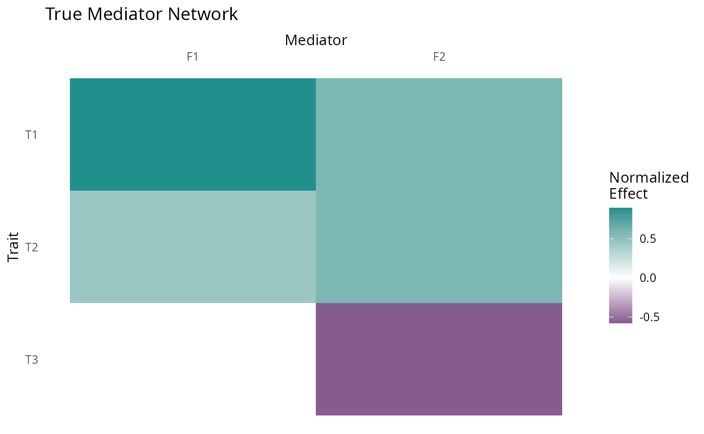
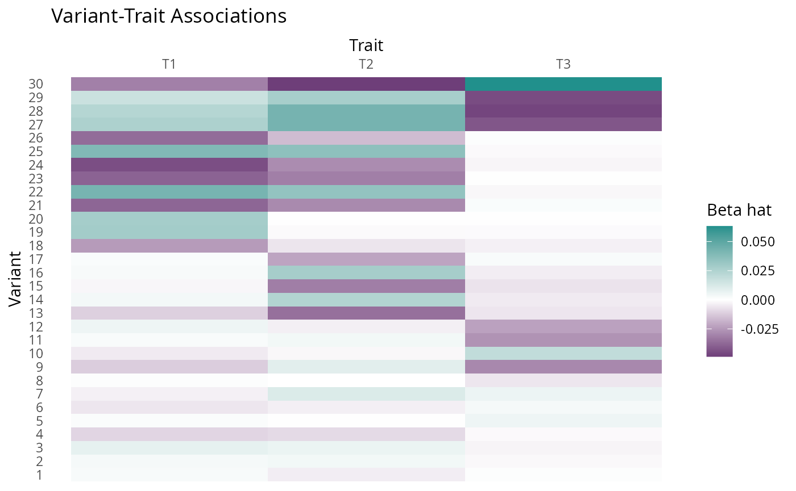
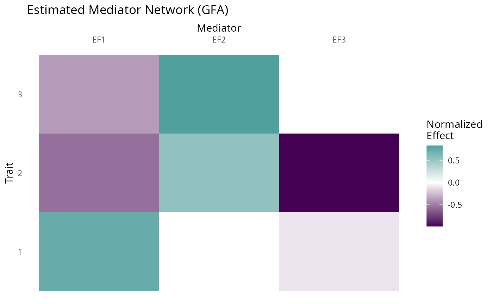
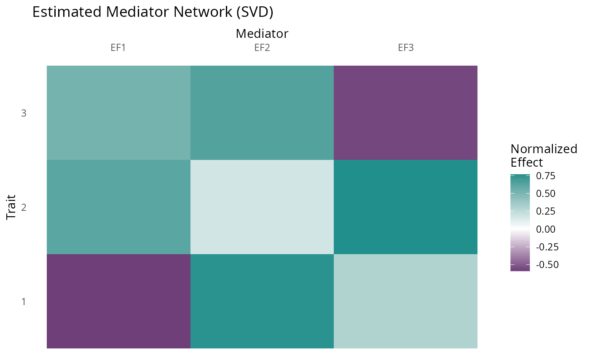
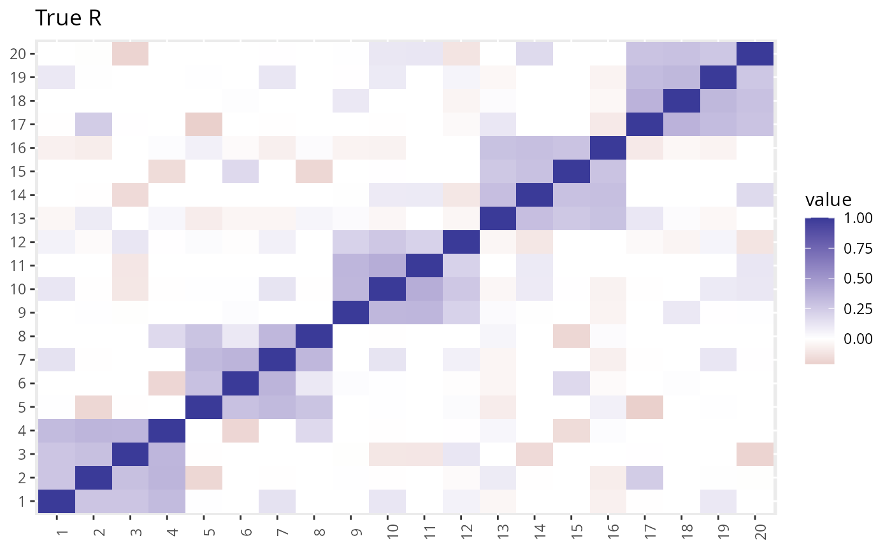
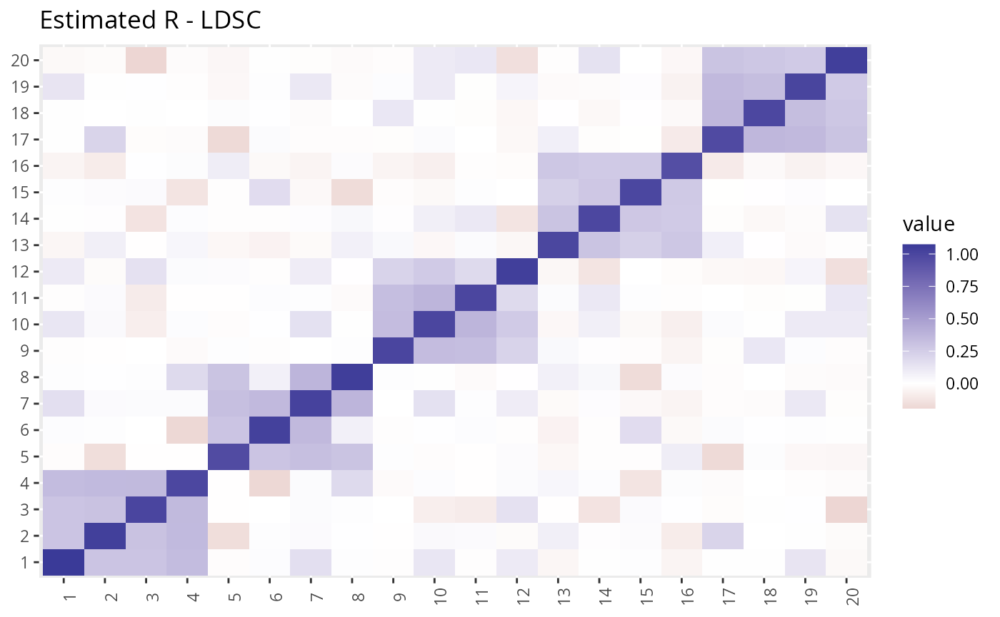
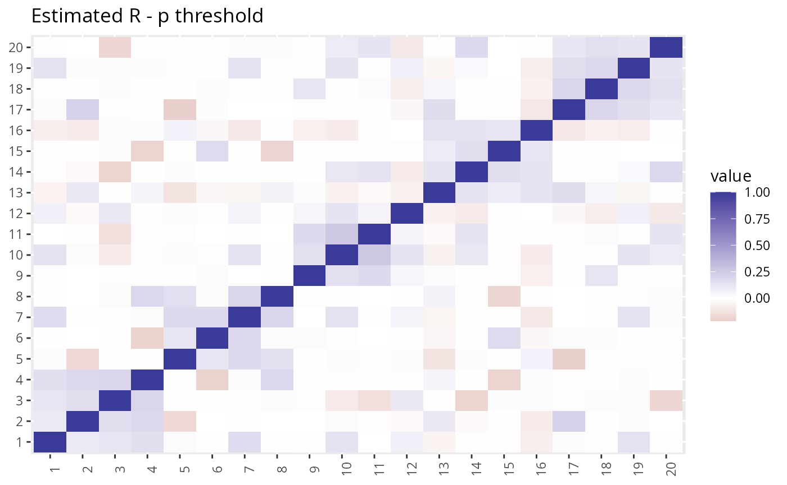
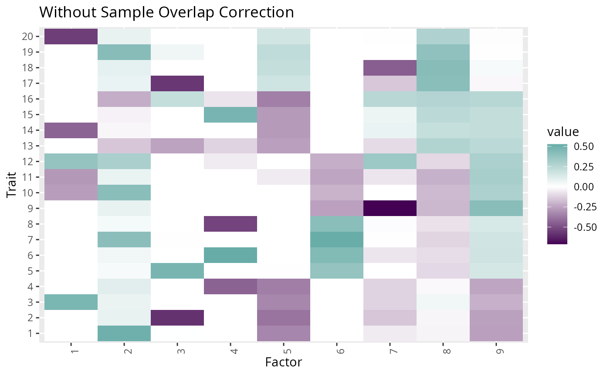
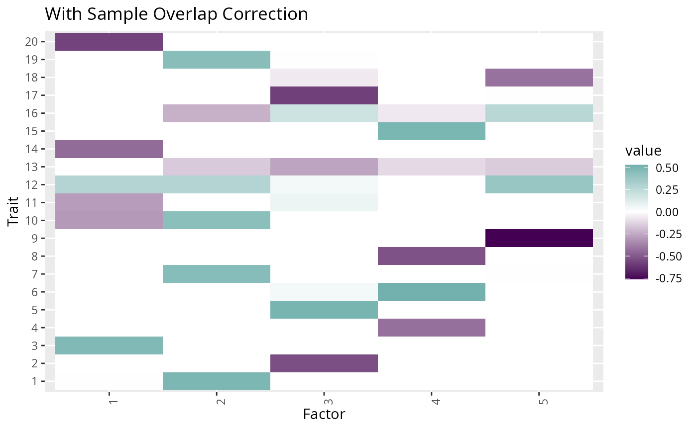
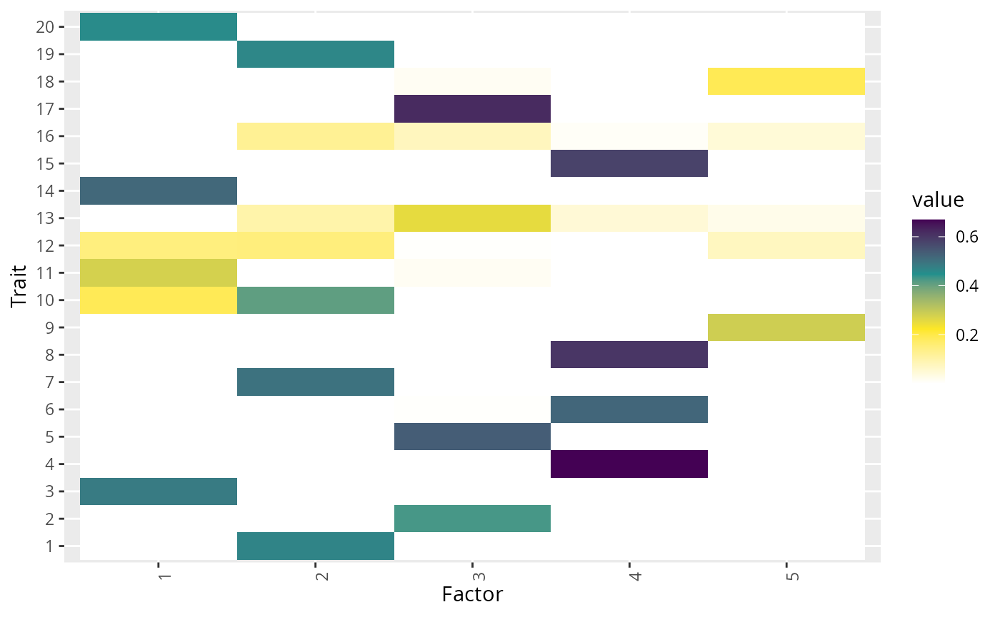

Running GFA with Simulated Data
gfa_with_simulated_data.Rmd
library(GFA)
library(GWASBrewer)
library(dplyr)
#>
#> Attaching package: 'dplyr'
#> The following objects are masked from 'package:stats':
#>
#> filter, lag
#> The following objects are masked from 'package:base':
#>
#> intersect, setdiff, setequal, union
library(ggplot2)
library(viridis)
#> Loading required package: viridisLiteIntroduction
In this vignette we will simulate two toy data sets and analyze them with GFA. The first toy data set is very simple and is the example shown in Figure 1 of the paper. The second toy data set is more complex. It includes more traits, a more complicated factor structure, and data are simulated with LD. For the second data set, we will compare results with and without accounting for correlation due to overlapping samples.
Simple Example
Simulate simple data
We will start by constructing and plotting the true factor structure.
GFA includes a convenience function plot_factors for
plotting matrices as heatmaps.
set.seed(100)
# True factor structure
myF <- matrix(c(0, -1, 1, 1, 2, 1), nrow = 3, byrow = TRUE)
myF <- apply(myF, 2, function(x){x/sqrt(sum(x^2))})
p <- plot_factors(myF, row_names = c("T3", "T2", "T1"), col_names = c("F1", "F2")) +
scale_fill_gradient2(low = viridis(3)[1], high = viridis(3)[2], name = "Normalized\nEffect") +
xlab("Mediator") +
ggtitle("True Mediator Network") +
scale_x_discrete(position = "top")+
theme(axis.text.x = element_text(angle = 0),
panel.background = element_rect(fill = "white"),
axis.ticks = element_blank())
#> Scale for fill is already present.
#> Adding another scale for fill, which will replace the existing scale.
p
Next we simulate some data using the sim_lf function in
GWASBrewer which simulates from the GFA model,
\[ \hat{B} = LF^\top + \Theta + E \] \(F\) is the factor structure, \(L\) is the randomly generated matrix of variant-factor effects, \(\Theta\) is an additional matrix of direct trait effects, and \(E\) is measurement error.
Our first example is a toy example designed to have a very strong signal that can be seen visually, but we don’t consider these parameters realistic. We use three traits that each have a heritability of 0.5, GWAS sample size of \(50,000\), and 80% of trait heritability explained by the two factors. We generate 10k independent SNPs (no LD). \(L\) and \(\Theta\) both have 10% non-zero elements. There is no overlap between the GWAS samples.
dat <- GWASBrewer::sim_lf(F_mat = myF,
N = 50000,
J = 10000,
h2_trait = rep(0.5, 3),
omega = rep(0.8, 3),
pi_L = rep(0.1,2),
pi_theta = 0.1,
est_s = TRUE)
#> SNP effects provided for 10000 SNPs and 3 traits.For illustrative purposes, we plot some of the simulated effect estimates \(\beta_hat\), selecting SNPS acting through a range of possible pathways with large effect sizes so that the pattern is clear visually.
# Null SNPS which do not effect factors or have additional effects in theta
ix0 <- sample(which((rowSums(dat$L_mat_joint == 0) == 2) & (rowSums(dat$theta_joint == 0) == 3)), size = 8)
# SNPS which only effect trait 1 directly and not through factors
ix1 <- sample(which((rowSums(dat$L_mat_joint == 0) == 2) & (rowSums(dat$theta_joint == 0) == 2) & abs(dat$theta_joint[,1])> 0.02), size = 4)
# SNPS which only effect trait 2 directly and not through factors
ix2 <- sample(which((rowSums(dat$L_mat_joint == 0) == 2) & (rowSums(dat$theta_joint == 0) == 2) & abs(dat$theta_joint[,2])> 0.02), size = 5)
# SNPS which only effect trait 3 directly and not through factors
ix3 <- sample(which((rowSums(dat$L_mat_joint == 0) == 2) & (rowSums(dat$theta_joint == 0) == 2) & abs(dat$theta_joint[,3])> 0.02), size = 3)
# SNPS which only effect effect factor 1
ix4 <- sample(which((rowSums(dat$L_mat_joint == 0) == 1) & abs(dat$L_mat_joint[,1]) > 0.07 & (rowSums(dat$theta_joint == 0) == 3)), size = 6)
# SNPS which only effect factor 2
ix5 <- sample(which((rowSums(dat$L_mat_joint == 0) == 1) & abs(dat$L_mat_joint[,2]) > 0.07 & (rowSums(dat$theta_joint == 0) == 3)), size = 4)
X <- dat$beta_hat[c(ix0, ix1, ix2, ix3, ix4, ix5),][,c(3,2,1)]
se <- dat$s_estimate[c(ix0, ix1, ix2, ix3, ix4, ix5),][, c(3,2,1)]
plot_factors(X, col_names = c("T1", "T2", "T3")) +
scale_fill_gradient2(low = viridis(3)[1], high = viridis(3)[2], name = "Beta hat") +
xlab("Trait") +
ylab("Variant") +
ggtitle("Variant-Trait Associations") +
scale_x_discrete(position = "top")+
theme(axis.text.x = element_text(angle = 0),
panel.background = element_rect(fill = "white"),
axis.ticks = element_blank())
#> Scale for fill is already present.
#> Adding another scale for fill, which will replace the existing scale.
Fit GFA to simple data
In a typical GFA analysis of real data, the next step is to estimate the nuisance correlation matrix. In our toy example, there is no sample overlap, so we will skip this step, but we will include it in the next example.
To fit GFA to our toy data, we use the gfa_fit function.
gfa_fit can take two types of input, either z-scores and
sample size or effect estimates and standard errors. If you know the
sample size for each GWAS, it is better to use z-scores and sample size.
In either case, GFA will be fit using z-scores and the fitted factors
will be re-scaled so that they are on the standardized trait scale. If
z-scores are provided and no sample size is given, factors can still be
estimated, but will be left on the z-score scale which depends on sample
size and may not be interpretable. We will discuss scaling in greater
detail later in this vignette.
Z_hat = with(dat, beta_hat/s_estimate)
fit_toy <- gfa_fit(Z_hat = Z_hat,
N = rep(50000, 3))
#> R is not supplied, fitting assuming full independence
#> Adding factor 1 to flash object...
#> Adding factor 2 to flash object...
#> Adding factor 3 to flash object...
#> Adding factor 4 to flash object...
#> Factor doesn't significantly increase objective and won't be added.
#> Wrapping up...
#> Done.
#> Backfitting 3 factors (tolerance: 4.47e-04)...
#> Difference between iterations is within 1.0e+02...
#> Difference between iterations is within 1.0e+01...
#> Difference between iterations is within 1.0e+00...
#> Difference between iterations is within 1.0e-01...
#> Difference between iterations is within 1.0e-02...
#> Difference between iterations is within 1.0e-03...
#> Wrapping up...
#> Done.
#> Nullchecking 3 factors...
#> Done.
#> begin while
#> Nullchecking 3 factors...
#> Done.
names(fit_toy)
#> [1] "fit" "method" "L_hat" "F_hat" "F_hat_single"
#> [6] "F_hat_multi" "scale" "gfa_pve" "mode" "params"The resulting fit object contains the following elements:
-
F_hat: estimated factor structure on standardized trait scale -
L_hat: Estimated variant-factor effects -
F_hat_single: Subset of columns ofF_hatcorresponding to single-trait factors. -
F_hat_multi: Columns ofF_hatcorresponding to multi-trait factors. -
F_hat_est: estimated factors on the estimated (z-score) scale (usually not needed). -
gfa_pve: An object containinggenet_varandpve.genet_varis the trait heritability explained by the fitted model.pveis the proportion of heritability for each trait (rows) explained by each factor (columns). -
scale,method,paramsandfitare for internal use.
We can plot the estimated factors using the plot_factors
function:
fit_toy$F_hat %>%
plot_factors(., col_names = c("EF1", "EF2", "EF3")) +
scale_fill_gradient2(low = viridis(3)[1], high = viridis(3)[2], name = "Normalized\nEffect") +
xlab("Mediator") +
ylab("Trait") +
ggtitle("Estimated Mediator Network (GFA)") +
scale_x_discrete(position = "top")+
theme(axis.text.x = element_text(angle = 0),
panel.background = element_rect(fill = "white"),
axis.ticks = element_blank())
#> Scale for fill is already present.
#> Adding another scale for fill, which will replace the existing scale.
The factors capture the truth quite well. Note that our estimated
factors are in a different order than the original. It is important to
keep in mind that the ordering of the factors is arbitrary. The sign of
each column is also arbitrary. We also have a third factor that effects
(almost) only trait 2. This captures direct effects on trait 2 that are
not mediated by the factors. For convenience, GFA will try to identify
these single trait factors and separate them, dividing
F_hat into F_single and F_multi
as described above. GFA is not restricted to produce a number of factors
equal to the number of traits. This occurs in this example by
coincidence.
For comparison we can try svd applied to z-scores for the most significant variants which decomposes \(\hat{Z}\) as \(UDV^\top\) . Here the equivalent estimate to our factors estimate is \(V\). Note that it is always best to run GFA on all variants or an LD-pruned subset and not on the most significant.
maxz <- apply(abs(Z_hat), 1, max)
Z_hat_top <- Z_hat[maxz > 5.45,] ## corresponds to p < 5e-8
fit_svd <- svd(Z_hat_top)
fit_svd$v %>%
plot_factors(., col_names = c("EF1", "EF2", "EF3")) +
scale_fill_gradient2(low = viridis(3)[1], high = viridis(3)[2], name = "Normalized\nEffect") +
xlab("Mediator") +
ylab("Trait") +
ggtitle("Estimated Mediator Network (SVD)") +
scale_x_discrete(position = "top")+
theme(axis.text.x = element_text(angle = 0),
panel.background = element_rect(fill = "white"),
axis.ticks = element_blank())
#> Scale for fill is already present.
#> Adding another scale for fill, which will replace the existing scale.
The first SVD factor is a good estimate of true factor F2 but the subsequent columns do not correspond to true factors because they are constrained to be orthogonal to the first.
More Complex Example
Next we will generate and analyze some more complicated data
including LD and sample overlap. We use the LD pattern built into the
GWASBrewer package which is estimated from chromosome 19 of
the European subset of 1k Genomes.
First we set up the simulation parameters. We will have 20 traits, 100k variants, and 5 unobserved factors. The GWAS sample size for the 20 traits will range between 30k and 50k with 30k samples common to GWAS of all traits. The proportion of non-zero effects are set so that, on average, there are 1k SNPs affecting each factor and 1k SNPs affecting each trait directly.
set.seed(201)
ntrait <- 20
nvar <- 100000
nfactor <- 5
# specify sample size matrix
Nmat <- matrix(30000, nrow = ntrait, ncol = ntrait)
Nunique <- ceiling(runif(n = 20, min = 0, max = 20000))
diag(Nmat) <- diag(Nmat) + Nunique
# proportion of effect variants
pi_L <- pi_theta <- 1000/nvarNext we generate a factor structure. To do this we use the
generate_random_F function in GWASBrewer. This
function requires a sampling function for drawing factor-trait effects,
the number of traits affected by each factor, the total trait
heritability, the proportion of heritability of each trait explained by
factors, and the heritability of the factors. For this example, we will
generate factor structures until we find one where every trait is
affected by at least one factor.
# sampling function
g_F <- function(n){runif(n, -1, 1)}
# number of traits affected by each factor
nz_factor <- pmin(rpois(nfactor, 5)+1, ntrait)
# heritability of each trait
h2_trait <- runif(n=ntrait, 0.05, 0.3)
# proportion of trait variance explained by factors
omega <- runif(n=ntrait, 0.5, 1)
# heritability of each factor
h2_factor <- runif(n=nfactor, 0.5, 1)
done <- FALSE
while(!done){
#cat("going..")
myF <- generate_random_F(K = nfactor, M = ntrait, g_F = g_F,
nz_factor = nz_factor, omega = omega,
h2_trait = h2_trait)
x <- rowSums(myF^2)
if(all(x > 0)) done <- TRUE
}Since GWAS samples overlap, the environmental correlation of the traits will affect the final GWAS estimates. Since each of our factors has some environmental component, some of the trait environmental correlation is mediated by factors. We can specify the correlation of the environmental components of the traits is not mediated by the factors. For our example, we will use a block correlation structure.
Now we are ready to generate data.
dat2 <- sim_lf(F_mat = myF, N=Nmat, J=nvar, h2_trait = h2_trait,
omega = omega, h2_factor = h2_factor,
pi_L = rep(pi_L, nfactor), pi_theta = pi_theta,
R_E = R_E,
R_LD = ld_mat_list, af = AF,
est_s = TRUE)
#> SNP effects provided for 100000 SNPs and 20 traits.
dat2 <- GWASBrewer:::calc_ld_scores(dat2, ld_mat_list)We can take a look at the generated true factor structure.
p <- dat2$F_mat %>%
GFA:::norm_cols() %>%
with(., A) %>%
plot_factors(.) +
scale_fill_gradient2(low = viridis(3)[1], high = viridis(3)[2], name = "Normalized\nEffect") +
xlab("Mediator") +
ylab("Trait") +
#ggtitle("Mediator Network") +
#scale_x_discrete(position = "top")+
theme(axis.text.x = element_text(angle = 0),
panel.background = element_rect(fill = "white"),
axis.ticks = element_blank(),
axis.text = element_text(size = 12),
title = element_text(size = 20),
legend.position = "none")
#> Scale for fill is already present.
#> Adding another scale for fill, which will replace the existing scale.
p
The simulated data also contains some objects describing the trait
covariance. The traits are scaled to have a total variance of 1.
dat$Sigma_G gives the genetic variance-covariance matrix,
so the diagonal of this matrix gives the heritability.
dat$Sigma_E gives the environmental variance-covariance
matrix, so the total trait correlation is
dat$Sigma_E + dat$Sigma_G. Useful for our purposes,
dat$R gives the residual correlation of the effect
estimates which is equal to dat$trait_cor with elements
scaled by the proportion of overlap between GWAS.
Estimate Nuisance Correlation
Since we have sample overlap, we should estimate the residual
correlation. We can do this using either R_ldsc or
R_pt to use the LD-score regression or p-value thresholding
methods. For the LD-score regression method, we need to provide LD
scores which were computed by GWASBrewer.
Z_hat <- with(dat2, beta_hat/s_estimate)
ldscores <- dat2$snp_info$l2
R1 <- R_ldsc(Z_hat, ldscores = ldscores, ld_size = nrow(Z_hat), N = diag(Nmat))
R2 <- with(dat2, R_pt(beta_hat, s_estimate, p_val_thresh = 0.05)) We can take a look at the estimated \(R\) vs the true \(R\). The LD-score method gives a more accurate estimate but takes longer to compute.
plot_factors(dat2$R) + theme(axis.title = element_blank()) + ggtitle("True R")
plot_factors(R1$Se) + theme(axis.title = element_blank()) + ggtitle("Estimated R - LDSC")
plot_factors(R2) + theme(axis.title = element_blank()) + ggtitle("Estimated R - p threshold")
plot(dat2$R, R2, xlab = "True Correlation", ylab = "Estimated Correlation - p threshold")
abline(0, 1)The LDSC estimate is closer to the truth, but GFA is not very sensitive to this difference.
Fit GFA
To fit GFA, we need to obtain an independent (LD-pruned) set of
variants. We can use GWASBrewer to find this for the
simulated data set. Note that we should not threshold
on p-value. It is ok to prioritize variants by minimum p-value for LD
pruning, but here we just prune randomly.
ix <- sim_ld_prune(dat2, R_LD = ld_mat_list, r2_thresh = 0.01)
#> pvalue omitted so variants will be prioritized randomly
Z_hat_indep <- Z_hat[ix,]
dim(Z_hat_indep)
#> [1] 4939 20Finally, we can fit GFA with or without adjustment for sample overlap
provided by the R argument. Recall that R1 was
estimated using LD-score regression and R2 was estimated
using p-value thresholding.
fit0 <- gfa_fit(Z_hat = Z_hat_indep, N = diag(Nmat))
#> R is not supplied, fitting assuming full independence
#> Adding factor 1 to flash object...
#> Adding factor 2 to flash object...
#> Adding factor 3 to flash object...
#> Adding factor 4 to flash object...
#> Adding factor 5 to flash object...
#> Adding factor 6 to flash object...
#> Adding factor 7 to flash object...
#> Adding factor 8 to flash object...
#> Adding factor 9 to flash object...
#> Adding factor 10 to flash object...
#> Adding factor 11 to flash object...
#> Factor doesn't significantly increase objective and won't be added.
#> Wrapping up...
#> Done.
#> Backfitting 10 factors (tolerance: 1.47e-03)...
#> Difference between iterations is within 1.0e+01...
#> Difference between iterations is within 1.0e+00...
#> Difference between iterations is within 1.0e-01...
#> Difference between iterations is within 1.0e-02...
#> Difference between iterations is within 1.0e-03...
#> Wrapping up...
#> Done.
#> Nullchecking 10 factors...
#> Done.
#> begin while
#> Nullchecking 10 factors...
#> Done.
fit1 <- gfa_fit(Z_hat = Z_hat_indep, N = diag(Nmat), R = R1$Se)
#> Warning in check_R(R, dat$p, params): R has values different from 1 on the
#> diagonal. This is ok.
#> Adding factor 1 to flash object...
#> Adding factor 2 to flash object...
#> Adding factor 3 to flash object...
#> Adding factor 4 to flash object...
#> Adding factor 5 to flash object...
#> Adding factor 6 to flash object...
#> Adding factor 7 to flash object...
#> Adding factor 8 to flash object...
#> Adding factor 9 to flash object...
#> Adding factor 10 to flash object...
#> Adding factor 11 to flash object...
#> Adding factor 12 to flash object...
#> Factor doesn't significantly increase objective and won't be added.
#> Wrapping up...
#> Done.
#> Backfitting 28 factors (tolerance: 1.47e-03)...
#> --Estimate of factor 5 is numerically zero!
#> --Estimate of factor 6 is numerically zero!
#> --Estimate of factor 7 is numerically zero!
#> --Estimate of factor 8 is numerically zero!
#> --Estimate of factor 10 is numerically zero!
#> Difference between iterations is within 1.0e+04...
#> Difference between iterations is within 1.0e+03...
#> Difference between iterations is within 1.0e+02...
#> Difference between iterations is within 1.0e+01...
#> Difference between iterations is within 1.0e+00...
#> Difference between iterations is within 1.0e-01...
#> Difference between iterations is within 1.0e-02...
#> Difference between iterations is within 1.0e-03...
#> Wrapping up...
#> Done.
#> Nullchecking 28 factors...
#> 5 factors are identically zero.
#> Factor22set to zero, increasing objective by 9.648e+00.
#> Factor26set to zero, increasing objective by 1.057e+01.
#> Factor27set to zero, increasing objective by 7.763e+00.
#> Factor28set to zero, increasing objective by 1.118e+01.
#> Wrapping up...
#> Removed 9 factors.
#> Done.
#> begin while
#> Nullchecking 19 factors...
#> Factor6set to zero, increasing objective by 1.623e+02.
#> Factor18set to zero, increasing objective by 4.582e+00.
#> Factor19set to zero, increasing objective by 6.542e+00.
#> Wrapping up...
#> Removed 3 factors.
#> Done.
fit2 <- gfa_fit(Z_hat = Z_hat_indep, N = diag(Nmat), R = R2)
#> Adding factor 1 to flash object...
#> Adding factor 2 to flash object...
#> Adding factor 3 to flash object...
#> Adding factor 4 to flash object...
#> Adding factor 5 to flash object...
#> Adding factor 6 to flash object...
#> Adding factor 7 to flash object...
#> Adding factor 8 to flash object...
#> Adding factor 9 to flash object...
#> Adding factor 10 to flash object...
#> Adding factor 11 to flash object...
#> Adding factor 12 to flash object...
#> Factor doesn't significantly increase objective and won't be added.
#> Wrapping up...
#> Done.
#> Backfitting 28 factors (tolerance: 1.47e-03)...
#> --Estimate of factor 8 is numerically zero!
#> --Estimate of factor 10 is numerically zero!
#> --Estimate of factor 5 is numerically zero!
#> --Estimate of factor 6 is numerically zero!
#> --Estimate of factor 7 is numerically zero!
#> Difference between iterations is within 1.0e+04...
#> Difference between iterations is within 1.0e+03...
#> Difference between iterations is within 1.0e+02...
#> Difference between iterations is within 1.0e+01...
#> Difference between iterations is within 1.0e+00...
#> Difference between iterations is within 1.0e-01...
#> Difference between iterations is within 1.0e-02...
#> Difference between iterations is within 1.0e-03...
#> Wrapping up...
#> Done.
#> Nullchecking 28 factors...
#> 5 factors are identically zero.
#> Factor22set to zero, increasing objective by 3.888e+01.
#> Factor23set to zero, increasing objective by 3.826e+01.
#> Factor24set to zero, increasing objective by 3.264e+01.
#> Factor25set to zero, increasing objective by 4.091e+01.
#> Factor26set to zero, increasing objective by 2.425e+01.
#> Factor27set to zero, increasing objective by 3.229e+01.
#> Factor28set to zero, increasing objective by 2.313e+01.
#> Wrapping up...
#> Removed 12 factors.
#> Done.
#> begin while
#> Nullchecking 16 factors...
#> Factor6set to zero, increasing objective by 1.067e+02.
#> Wrapping up...
#> Removed one factor.
#> Done.We can compare these results to fitting GFA using the true nuisance correlation matrix,
fitoracle <- gfa_fit(Z_hat = Z_hat_indep, N = diag(Nmat), R = dat2$R)
#> Adding factor 1 to flash object...
#> Adding factor 2 to flash object...
#> Adding factor 3 to flash object...
#> Adding factor 4 to flash object...
#> Adding factor 5 to flash object...
#> Adding factor 6 to flash object...
#> Adding factor 7 to flash object...
#> Adding factor 8 to flash object...
#> Adding factor 9 to flash object...
#> Adding factor 10 to flash object...
#> Adding factor 11 to flash object...
#> Adding factor 12 to flash object...
#> Factor doesn't significantly increase objective and won't be added.
#> Wrapping up...
#> Done.
#> Backfitting 28 factors (tolerance: 1.47e-03)...
#> --Estimate of factor 5 is numerically zero!
#> --Estimate of factor 6 is numerically zero!
#> --Estimate of factor 7 is numerically zero!
#> --Estimate of factor 8 is numerically zero!
#> --Estimate of factor 10 is numerically zero!
#> Difference between iterations is within 1.0e+04...
#> Difference between iterations is within 1.0e+03...
#> Difference between iterations is within 1.0e+02...
#> Difference between iterations is within 1.0e+01...
#> Difference between iterations is within 1.0e+00...
#> Difference between iterations is within 1.0e-01...
#> Difference between iterations is within 1.0e-02...
#> Wrapping up...
#> Done.
#> Nullchecking 28 factors...
#> 5 factors are identically zero.
#> Factor24set to zero, increasing objective by 6.277e+00.
#> Factor26set to zero, increasing objective by 1.314e+01.
#> Factor27set to zero, increasing objective by 9.652e+00.
#> Factor28set to zero, increasing objective by 2.052e+01.
#> Wrapping up...
#> Removed 9 factors.
#> Done.
#> begin while
#> Nullchecking 19 factors...
#> Factor6set to zero, increasing objective by 1.578e+02.
#> Factor17set to zero, increasing objective by 6.327e+00.
#> Factor18set to zero, increasing objective by 3.836e+00.
#> Factor19set to zero, increasing objective by 1.115e+01.
#> Wrapping up...
#> Removed 4 factors.
#> Done.In this example, we get nearly identical results using either
estimate of R or the truth. With any of these settings, we are able to
accurately recover all five factors. We can see this by using the
min_norm function which compares two factor matrices
finding the rotation, \(Q\) that
minimized the frobenious norm \(\vert \vert
F_1 - Q F_2 \vert \vert_{F}\). The min_norm function
will report which factors match between the matrices, how well they
match, as well as the overall frobenious norm. A frobenious norm of 0
means the matrices are exactly the same. The value of the frobenious
norm can be roughly interpreted as the number of factors in \(F_2\) with no match in \(F_1\) plus the number of factors in \(F_1\) with no match in \(F_2\), with partial scores for partially
matching factors.
For example, we can first compare the true factor structure to our
first GFA estimate. This shows that all five factors were recovered with
very high correlation. The value in the val column of the
solution element is equal to the normalized inner product
of the two factors, approximately equal to the correlation.
min_norm(f_true = dat2$F_mat, f_hat = fit1$F_hat)
#> $solution
#> true_ix est_ix max_true_val max_hat_val penalty match_score
#> 1 5 4 0.5387060 0.5291128 0.001436740 0.9992816
#> 2 1 2 0.5082579 0.4920455 0.003164712 0.9984176
#> 3 4 1 0.5321195 0.5697020 0.005522261 0.9972389
#> 4 3 3 0.5828887 0.5819004 0.013035870 0.9934821
#> 5 2 5 0.7047004 0.7606438 0.015395358 0.9923023
#>
#> $frob_n
#> [1] 0.1963541Looking at the frobenious norm values, we can see that all GFA estimates that included the nuisance correlation were very similar.
min_norm(f_true = dat2$F_mat, f_hat = fit1$F_hat)$frob_n
#> [1] 0.1963541
min_norm(f_true = dat2$F_mat, f_hat = fit2$F_hat)$frob_n
#> [1] 0.2314396
min_norm(f_true = dat2$F_mat, f_hat = fitoracle$F_hat)$frob_n
#> [1] 0.1906022If we compare these results with the results where we omitted the
R argument, we can see that not adjusting for the nuisance
correlation has resulted in four extra factors being estimated that
don’t match any true factors. The correlation between the matching
factors is also slightly lower than in the result where we did account
for sample overlap. The two factors given scores of NA are single trait
factors and don’t count towards the overall forbenious norm score. The
value in opt_frob_n shows the best score achievable by
selecting only a subset of the estimated factors. We can see that, even
if we knew which factors to remove, we would still have a worse match
than achieved by the method which accounts for sample overlap.
min_norm(f_true = dat2$F_mat, f_hat = fit0$F_hat)
#> There are 1 single trait factors in f_hat
#> $solution
#> true_ix est_ix max_true_val max_hat_val penalty match_score
#> 1 4 1 0.5321195 0.5486638 0.002814011 0.9985930
#> 2 5 4 0.5387060 0.5310407 0.004892544 0.9975537
#> 3 3 3 0.5828887 0.5858742 0.014126643 0.9929367
#> 4 1 2 0.5082579 0.5023813 0.070248731 0.9648756
#> 5 2 7 0.7047004 0.7111798 0.097523443 0.9512383
#> 6 NA 9 NA 0.4175495 1.000000000 0.0000000
#> 7 NA 8 NA 0.4232410 1.000000000 0.0000000
#> 8 NA 5 NA 0.3864060 1.000000000 0.0000000
#> 9 NA 6 NA 0.5245608 1.000000000 0.0000000
#> 10 NA 10 NA 0.9999966 NA NA
#>
#> $frob_n
#> [1] 2.046853Plotting the factors estimated with and without the correction for
overlapping samples, shows that the factor structure of the extra
factors mimics the structure of the environmental correlation. We can
also see that some of the matching factors estimated in
fit0 are contaminated with some of the structure of the
environmental correlation. Here we plot only the multi-trait
factors.
p0 <- fit0$F_hat_multi %>%
plot_factors(.) +
scale_fill_gradient2(low = viridis(3)[1], high = viridis(3)[2]) +
xlab("Factor") +
ylab("Trait") +
ggtitle("Without Sample Overlap Correction")
#> Scale for fill is already present.
#> Adding another scale for fill, which will replace the existing scale.
p1 <- fit1$F_hat_multi %>%
plot_factors(.) +
scale_fill_gradient2(low = viridis(3)[1], high = viridis(3)[2]) +
xlab("Factor") +
ylab("Trait") +
ggtitle("With Sample Overlap Correction")
#> Scale for fill is already present.
#> Adding another scale for fill, which will replace the existing scale.
p0
p1
Understanding Scaling Within and Between Factors
If data is supplied as z-scores and sample sizes, the effects in
F_hat will be returned are on the standardized effect
scale. For example, if the first column of F_hat was equal
to \((1, 2, 0)\), this would mean that,
for each unit increase in the first factor, there is a 1 sd increase in
trait 1, a 2 sd increase in trait 2 and no change in trait 3. However
the scale of the inferred factor is arbitrary, so a factor \((1, 2, 0)\) is equivalent to a factor \((0.1, 0.2, 0)\). This means that an
appropriate interpretation of the factor \((1,
2, 0)\) is that the first factor has an effect on trait 2 that is
twice as big as its effect on trait 1 in units of trait standard
deviations. For plotting convenience, in our output, we always
scale the factors so that the columns of F_hat have norm
1.
If only z-scores and no sample sizes are provided, the effects in
F_hat will be returned are on the z-score scale,
proportional to trait standard deviation divided times square root of
sample size. Since sample size is a study design parameter, these
effects are not immediately interpretable, but could be converted to the
standardized trait scale by dividing each row of F_hat by
the square root of the sample size for the corresponding trait.
If effect estimates and standard errors are supplied, the the effects
in F_hat will be returned on the natural scale, i.e. the
scale of the trait used in GWAS. Alternatively, if effects on the
natural scale are desired, GFA can be fit using z-scores, and then
effects can be transformed. Supplying data as z-scores and sample size
or as effect estimates and standard errors should give nearly identical
results up to trait scaling.
Percent of Heritability Explained
The gfa_pve element of the GFA results object contains
two elements, a vector, genet_var and a matrix
pve. The genet_var vector gives the proportion
of trait variance explained by the variants that GFA was fit with
according to the fitted model. This is an estimate of the heritability
attributable to the variants in the model. In most cases, this is an
underestimate of the total trait heritability because GFA is only fit
with an LD-pruned subset of variants. We don’t recommend GFA as an ideal
heritability estimation tool. The more interesting object is
pve which has dimension traits by inferred factors and
gives for each trait, the proportion of heritability explained by that
factor. We have found that even though the model does not capture all of
the total heritability, our estimates of proportion of heritability
explained by each factor are close to the truth.
Using results from the second example, we plot the proportion of variance explained matrix:
p1 <- fit1$gfa_pve$pve %>%
plot_factors(.) +
scale_fill_gradientn(colors = c("white", rev(viridis(3)))) +
xlab("Factor") +
ylab("Trait")
#> Scale for fill is already present.
#> Adding another scale for fill, which will replace the existing scale.
p1
We can compare our estimated proportion of heritability explained with the true heritability explained by each factor.
sim_calc_pve <- function(dat){
sj <- sapply(1:ncol(dat$F_mat), function(kk){
compute_h2(b_joint = with(dat, L_mat_joint[,kk,drop = F] %*% t(F_mat[,kk, drop = F])),
geno_scale = "allele",
af = AF,
R_LD = ld_mat_list)
}) |> matrix(nrow = nrow(dat$F_mat), byrow = FALSE)
return(sj/dat$h2)
}
pve_true <- sim_calc_pve(dat2)
## order true pve and estimated pve so they can be compared
sol <- min_norm(f_hat = fit1$F_hat,
f_true = dat2$F_mat)$solution
order_true <- sol$true_ix
order_est <- sol$est_ix
pve_est <- fit1$gfa_pve$pve[, order_est]
pve_true <- pve_true[, order_true]
plot(pve_true, pve_est)
abline(0, 1)In this example, our estimated proportions of heritability explained tend to be lower than the truth, but are generally fairly close.